The forest around Dunkwa-on-Offin keeps turning into mining pits.
Between October 2025 and October 2026, satellites saw 4,046 hectares of land lose its plant cover in this area. That is about 5,700 football pitches.
We looked at the five largest patches by eye. Three are galamsey pits. Two are licensed industrial mines. The two pictures show the same place a year apart.
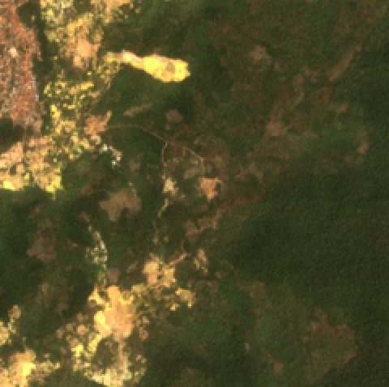
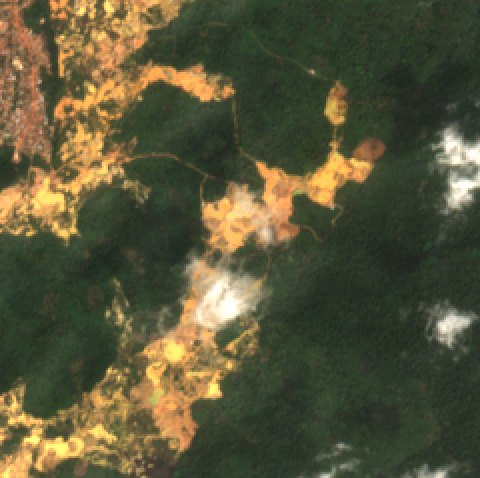
The biggest changes this year
Every patch here lost most of its plants in the last 12 months. Satellites cannot tell why. A person looks at each one before we call it mining.
-
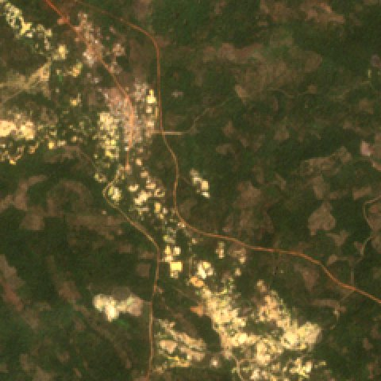
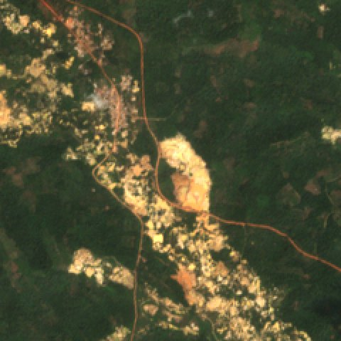
25 hectares near 5.86° N, 1.92° W
First seen 1 November 2025. Pit ponds spreading along a stream.
Galamsey -
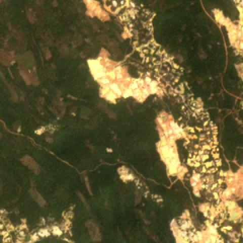
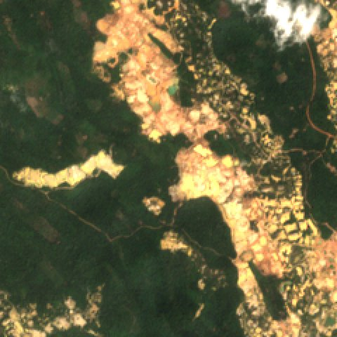
17 hectares near 5.83° N, 1.91° W
First seen 22 October 2025. An existing pit field grew west.
Galamsey -
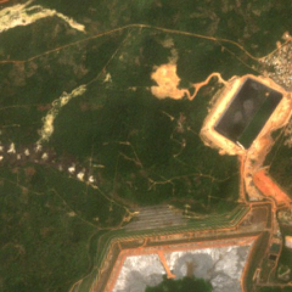
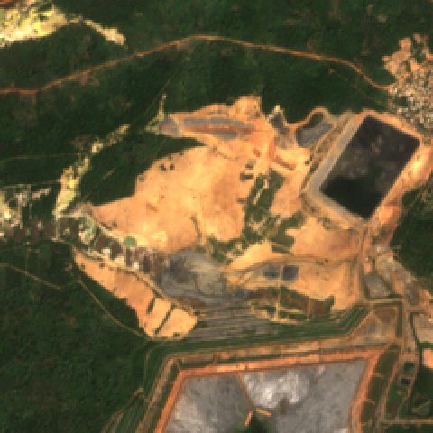
124 hectares near Obuasi
First seen 3 November 2025. Tailings dams and an engineered pit.
Industrial mine -
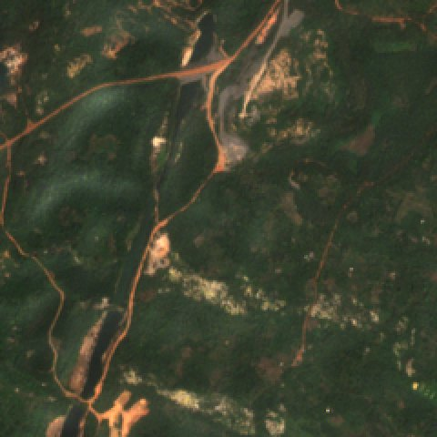
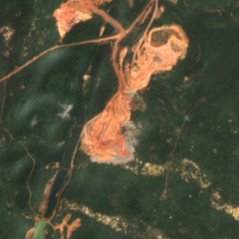
27 hectares near 5.49° N, 1.85° W
First seen 27 October 2025. Large open pit with haul roads.
Industrial mine
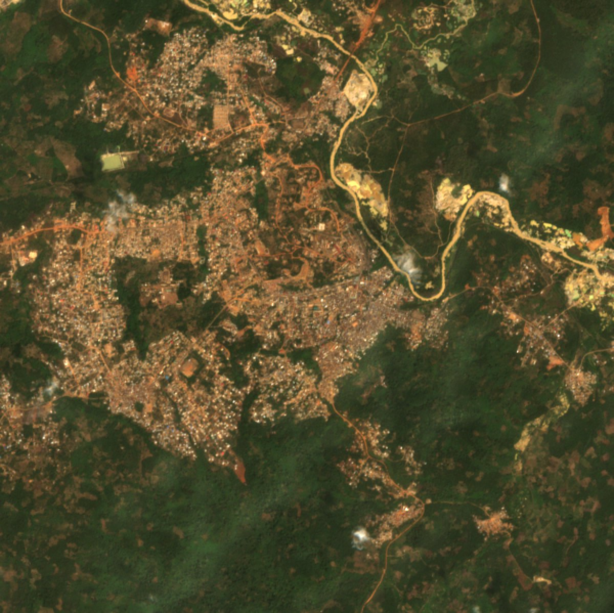
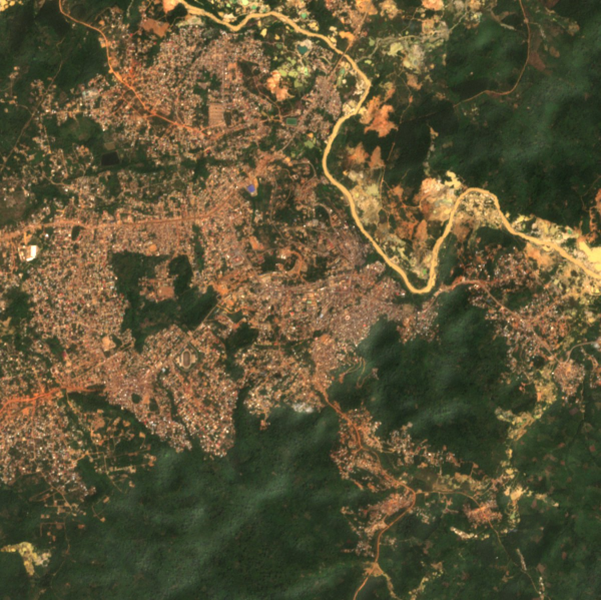
The Offin River at Dunkwa
The river was already brown in 2017. Since then, the mining has moved onto the banks on both sides.
- Colour
- Brown in every clear image since January 2017
- Last clear view
- 25 January 2026
- Why so old
- Clouds hide the river from June to September